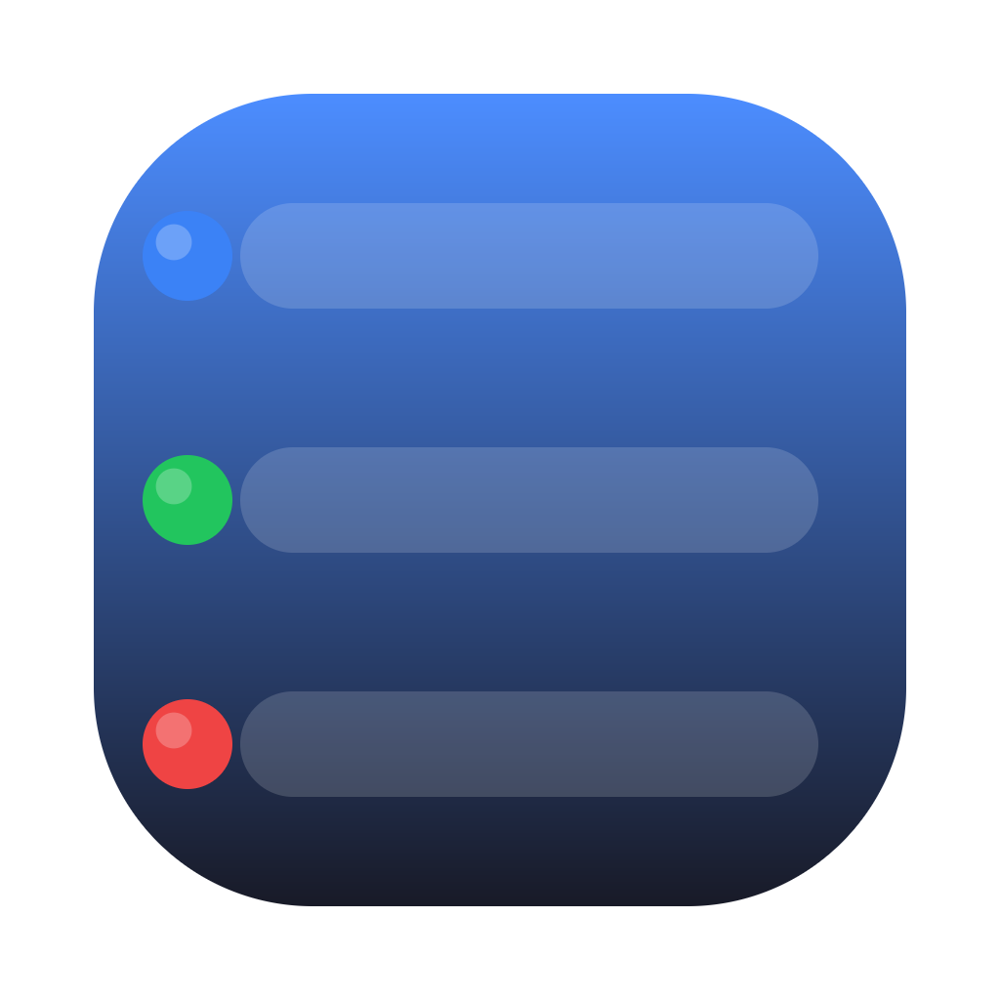

Kiro 任务监控Kiro 任务跑得久，你不盯着就不知道它何时完成、何时出错停下。 这个桌面浮窗替你盯着所有会话：出错弹提示 + 一键重试，完成即时通知。
跨所有工作区，一个浮窗看清全部会话状态
任务跑完立刻弹通知，不用反复切回去看它好了没。
会话因报错停下时高亮告警，点一下就把「继续」发回对应窗口。
运行中却长时间无动静，判定疑似卡住并提醒，避免白等。
跨多个窗口，只显示你当前真正打开着的会话，还标出每个窗口「当前」聚焦的那个，不被旧会话刷屏。
启动自动检查一键重试 / 聚焦所需的「辅助功能」授权。缺了就在浮窗顶部提醒，点「去授权」直达系统设置，不再对着没反应的按钮发愁。
浮窗底部一条进度条，随时看清套餐额度用了多少、还剩多少、几天后重置；接近上限变黄、超额变红。
同一个浮窗里顺带盯住 Claude Code 会话：运行中 / 完成 / 失败 / 中断，用来源色片和 Kiro 一眼区分（只读展示）。
开启「局域网访问」，同一 Wi-Fi 下用手机或平板浏览器输入 PIN 即可全屏查看所有会话状态，横竖屏自适应——把一台闲置设备立成你的任务看板。
嫌占地方？一键切到单行紧凑视图，隐藏次要信息，窗口能缩到很小，安静待在屏幕角落。普通 / 极简两种尺寸各自记忆。
仅读取本地会话记录推导状态，绝不修改 Kiro / Claude Code 的任何数据。
已签名公证，自动检查新版；也可在设置里手动检查，下载完一键重启更新。
每个会话一行，颜色即状态
打开就能用，几乎零学习成本
浮窗停在桌面右上角，始终置顶。每行是一个你当前打开着的会话：左侧圆点即状态，右侧是耗时与所属工作区；每个窗口聚焦的会话会标上「当前」。
出错或卡住的会话，行末出现「重试」按钮，点一下即把「继续」发回对应的 Kiro 窗口，无需手动找窗口敲字。
点某一行，即把该会话所在的 Kiro 窗口切到最前面，方便你接着处理。
任务完成或出错都会弹系统通知（出错还带提示音和「重试」按钮），不用一直盯着屏幕。
浮窗底部一条用量进度条：还剩多少额度、已用百分比、几天后重置一目了然；接近上限变黄、超额变红。不需要时可在设置里关掉。
菜单栏一个 ◐ 图标，后面跟当前运行中的会话数（没有就只显示图标，清清爽爽）；有任务出错 / 卡住时，图标角上亮一个红点提醒。光标停上去看运行中 / 待处理详情。左键显示/隐藏浮窗，右键打开快捷菜单。
在设置里打开「局域网访问」，会显示一个网址和 6 位 PIN。用同一 Wi-Fi 下的 iPhone / iPad 浏览器打开该网址、输入 PIN 即可实时查看；在 Safari「添加到主屏幕」后能全屏、横竖屏自适应，把闲置设备变成专属任务看板（只读）。
启动就会检查一键重试 / 聚焦窗口所需的「辅助功能」授权是否到位。没授权时浮窗顶部会弹一条提醒，点「去授权」直接跳到系统设置；授予后回到浮窗自动复查。设置里也能随时查看各项自检结果。
万一识别不到会话或状态不对，设置里点「生成报告」就能导出一份 JSON 发给我们排查。默认已脱敏，不含真实项目名和任务标题。
浮窗右上角 ⚙ 可开关各类通知、设置重试发送内容，选择「只显示已打开的会话」、开关套餐用量显示，还能手动检查更新、一键重启升级。
下载按钮始终指向最新版；升级后自动生效
全程无需命令行
点上方按钮下载最新的 .dmg（universal，通用于 Apple Silicon 与 Intel）。
双击 dmg，把「Kiro 任务监控」拖进「应用程序」——务必从「应用程序」里打开，直接在 dmg / 下载目录里运行会无法自动更新。
启动后浮窗停在桌面右上角，菜单栏出现 ◐ 图标。已公证，双击直开。